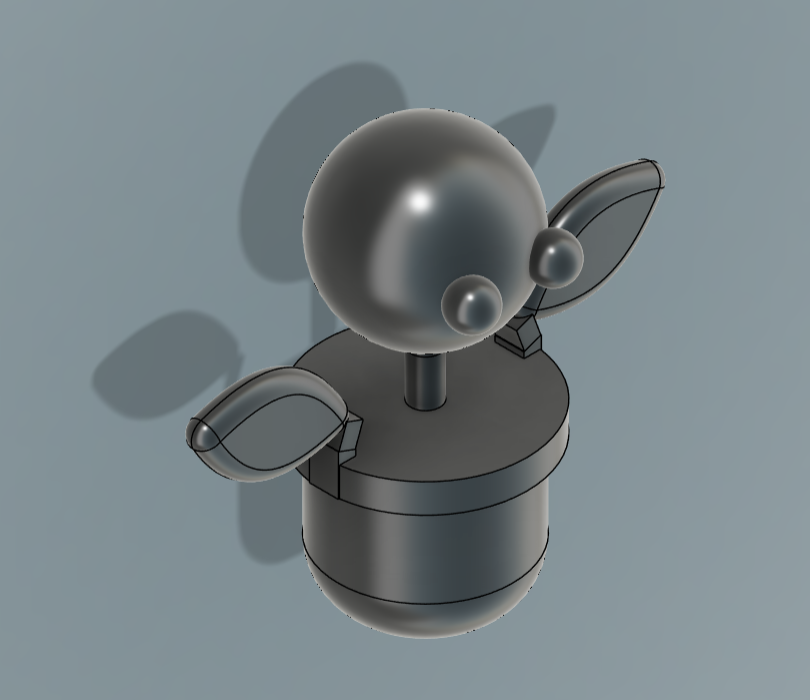
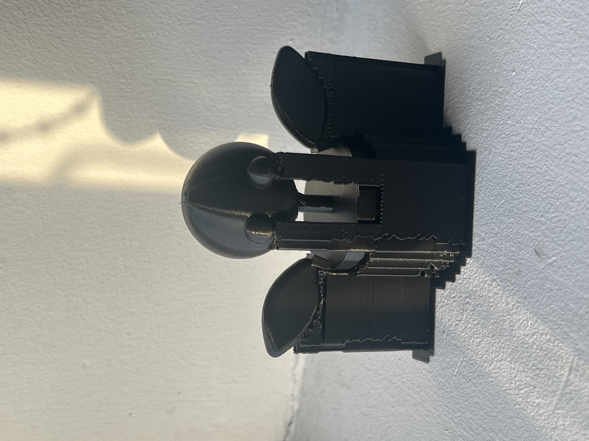
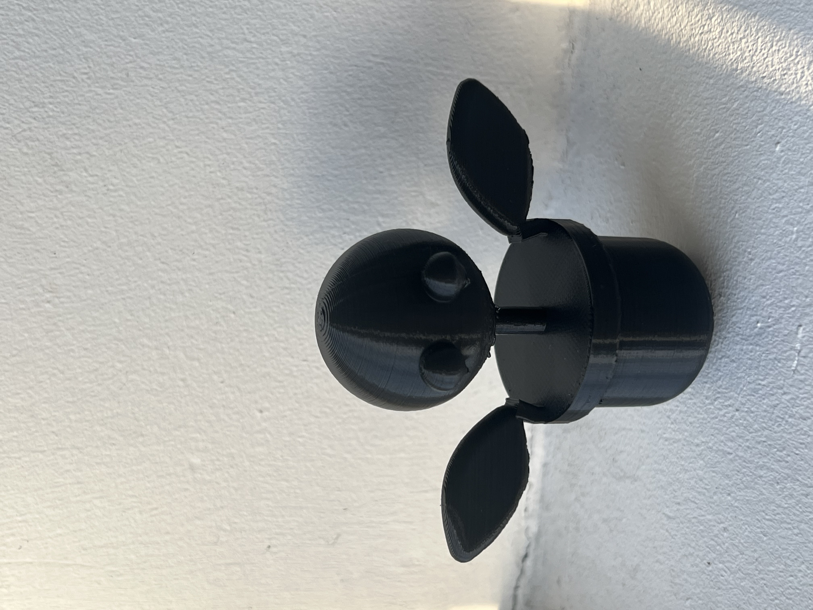

Project 3: 3D Printing & Scanning
📌 Overview
For this project, I wanted to create something meaningful, so I decided to turn the Botanic logo (from my AI chatbot project) into a 3D printed sculpture. The goal was to produce a layered version of the logo, making it impossible to manufacture using subtractive methods like laser cutting or CNC machining.
The design was made in Fusion 360, then processed in PrusaSlicer, and printed on a Prusa i3 MKS. After printing, I also used Polycam to scan a Collab energy drink, since I basically drink those every day.
🏗️ Fusion 360 Design Process
I built the model in Fusion 360 using a layered approach. Since the original logo is a 2D drawing, I had to break it down into separate components for the head, eyes, leaves, stem, and pot.
- Started with a sketch of the logo, then converted it into multiple 3D components.
- Used parametric design to allow easy adjustments to thickness and size.
- Mirrored elements like leaves for perfect symmetry.
- Filleted some edges for a smoother, more polished look.
The most challenging part was getting the proportions right while making sure all parts were thick enough for 3D printing. The final design was exported as an STL file for slicing.
Download Fusion 360 Assembly File
🖨️ 3D Printing with Prusa i3 MKS
Once the design was ready, I imported the STL file into PrusaSlicer and set up the print. This was my first time using a slicer, so it took some time to figure out settings.
The print time was 2 hours 57 minutes, which was longer than I expected for such a small object, but I had no real reference point for print times.
- Supports: Added, but probably overkill
📸 3D Print Result
The print finished successfully. The supports ended up being kind of overkill, but overall, the details turned out very well! Below are images of the print before and after removing supports.
 📡 3D Scanning with Polycam
For the scanning part of the project, I used Polycam on my phone to scan a Collab energy drink (since I drink those every day). The scan came out decent, but like most mobile-based scans, it had some imperfections in the textures and surface smoothness.
Download Scanned Collab Energy Drink (ZIP)
⚠️ Challenges & Solutions
| Challenge | Solution |
|---|---|
| Never used Fusion 360 for organic models | Used symmetry & parametric design to simplify adjustments. |
| First time using PrusaSlicer | Watched a few tutorials and adjusted settings based on trial & error. |
| Print time longer than expected | Checked print preview in slicer to understand time estimates. |
| 3D scanning had texture issues | Would try a structured-light scanner for better accuracy next time. |
💡 Lessons Learned
- 3D printing takes longer than expected, even for small objects.
- Supports are not always necessary—better to optimize the design instead.
- 3D scanning with a phone is good for basic captures but lacks fine detail.
- Fusion 360 is powerful for designing layered objects, but takes time to master.
- Overall this was a super fun project and totally got my attention and interest into how useful 3D printing is.